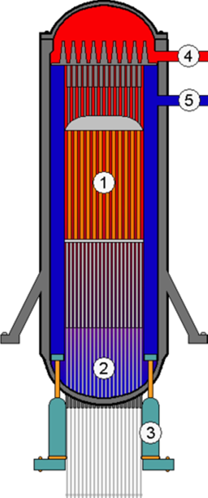

Un réacteur nucléaire est un ensemble de dispositifs comprenant du combustible nucléaire, qui constitue le « cœur » du réacteur, dans lequel une réaction en chaîne peut être initiée et contrôlée par des agents humains ou par des systèmes automatiques, via des protocoles et des dispositifs propres à la fission nucléaire.

Le cœur du réacteur, où se produit la réaction en chaîne produisant de la chaleur, est composé d’assemblages combustibles. Chaque assemblage combustible comporte 264 crayons combustibles, 24 tubes pouvant contenir les crayons d’une grappe de commande et un tube d’instrumentation.
Les crayons combustibles, d’une hauteur approximative de 4 mètres (variable selon la puissance du réacteur), sont constitués de tubes en alliage de zirconium (ou zircaloy), appelés aussi gaines. La gaine des crayons combustibles constitue la première des trois barrières de sûreté qui empêche la dispersion des produits radioactifs contenus dans le combustible.
A l’intérieur des crayons sont empilées des pastilles de 8,2 mm de diamètre de dioxyde d’uranium (UO2) ou d’un mélange d’oxydes d’uranium et de plutonium ((U,Pu)O2, qui constituent le combustible nucléaire. Le combustible est renouvelé partiellement lors des arrêts programmés du réacteur dont la périodicité varie entre 12 et 18 mois.
Le cœur est disposé à l’intérieur d’une cuve en acier au carbone (cf. schéma ci-contre) revêtue d’une « peau » en acier inoxydable, munie d’un couvercle qui est enlevé pour les opérations de renouvellement du combustible. En fonctionnement normal, la cuve du réacteur est remplie d’eau maintenue à une pression de 155 bar.
Un réacteur nucléaire comporte schématiquement deux parties : un « îlot nucléaire » dans lequel la fission nucléaire produit de la chaleur, et un « îlot conventionnel » où cette chaleur est transformée en courant électrique.

Les équipements de l’îlot conventionnel fournissent l’énergie électrique au réseau de transport à partir de la vapeur produite dans l’îlot nucléaire. L’îlot conventionnel comporte notamment